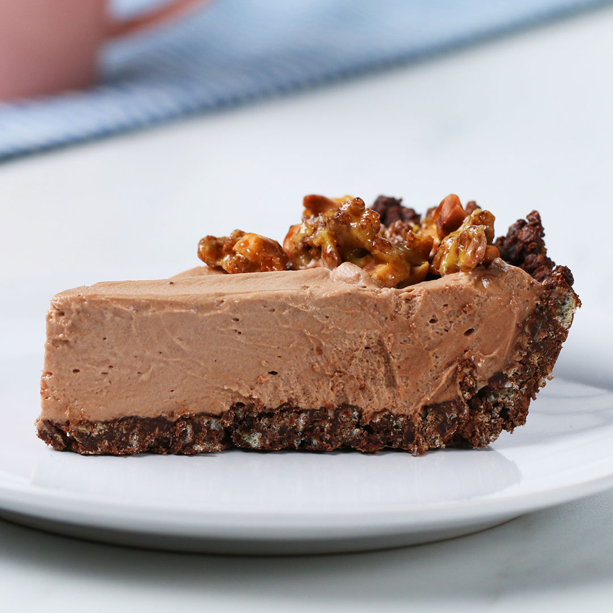

Nutella Mousse Pie

Ingredients
- 2 cups Cocoa Crispies
- 1 cup chocolate chips
- 1 stick butter (halves)
- 1 cup Nutella
- 2 cups heavy whipping cream
- 1 cup chopped pecans
- 2 cups sugar
Instructions
- Add Cocoa Crispies to plastic bag and crush with rolling pin, or crush with food processor
- Melt half stick butter and chocolate chips in microwave, add to crushed Crispies
- Once mixed, add to greased spring form or pie pan. Press into edges to create even crust
- Add heavy whipping cream to bowl and use hand mixer until ridges form in mousse
- Add in 1 cup sugar and mix
- Warm nutella and add to mousse, mix until color is the same throughout
- Add mousse mixture to pie crust and smooth with rubber spatula
- In medium skillet, brown 1 cup sugar, add butter and melt down until golden brown
- Once brown, immediately remove from heat and add in pecans and rest of Crispies
- Mix together and spread onto baking pan covered in wax paper, use forks to split into tiny clusters, allow to cool
- Cover pie and put in freezer or fridge until time to serve, when ready remove and add clusters around the circumfrence of the pie